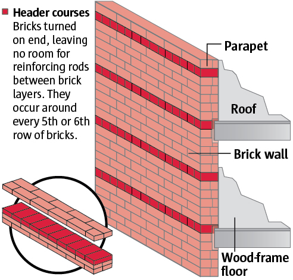

Preventing earthquake damage
Newer buildings are designed to ride out earthquakes, but old brick structures are vulnerable to collapse. In order to save lives and reduce – but not prevent – damage, Seattle would need to retrofit, or modify buildings categorized as unreinforced masonry.
Unreinforced Masonry buildings (URMs)
The vast majority of stone and brick buildings constructed before earthquakes were factored into building codes around the 1940s are called URMs. Most have brick walls and wood-frame floors and roofs. Very few were built after the World War II era, and none were allowed to be built in Seattle after 1977. A tell-tale sign of URM construction is header courses – lines of bricks turned on end.

During an earthquake
Old brick buildings are vulnerable because there’s often no connection from walls and parapets to the rest of the structure. As a result, parapets can break off and entire buildings can collapse, injuring or killing occupants and passerby. Retrofitting reduces the danger.
Retrofitting of old brick buildings
Upgrading an old building to make it more earthquake-safe is called seismic retrofitting. The process involves connecting brick walls and parapets to the roof and floors.
Sources: Seattle Department of Planning and Development, Nancy Devine of Seattle Department of Planning and Development, FEMA, American Society of Civil Engineers, seblog.strongtie.com, Mark Pierepiekarz of MRP Engineering
STEPHANIE REDDING AND AUDREY CARLSEN / THE SEATTLE TIMES
<% if (json.project.production) { %>
<%= !json.project.embedded ? t.include("partials/_adFoot.html") : "" %>
<%= t.include("partials/_workHere.html") %>
<% } %>